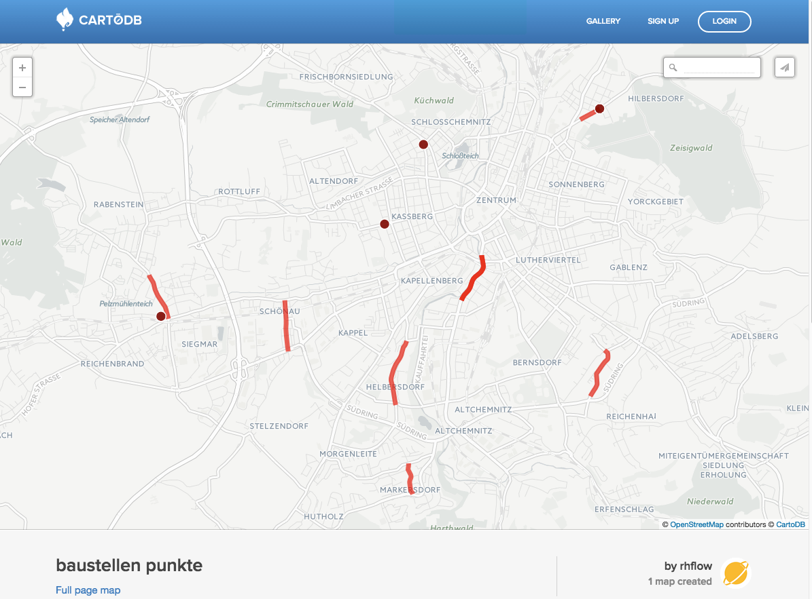
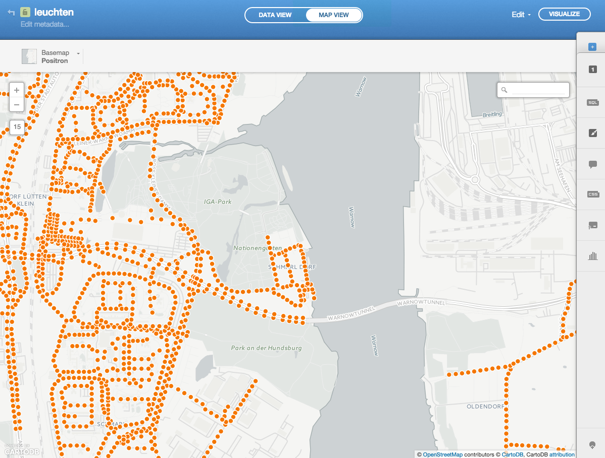
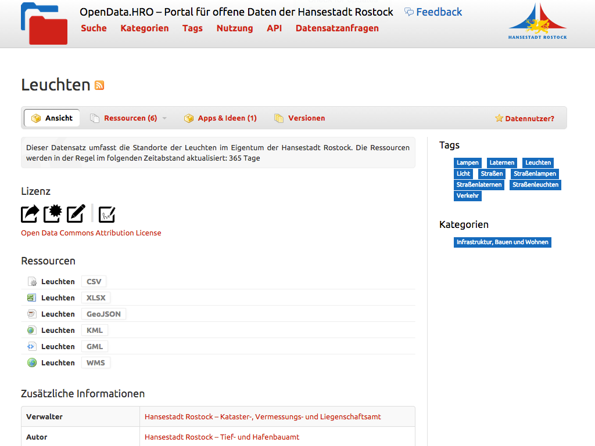
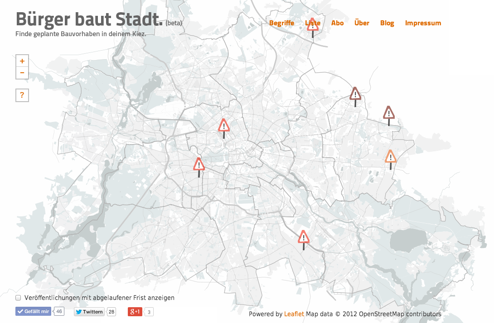
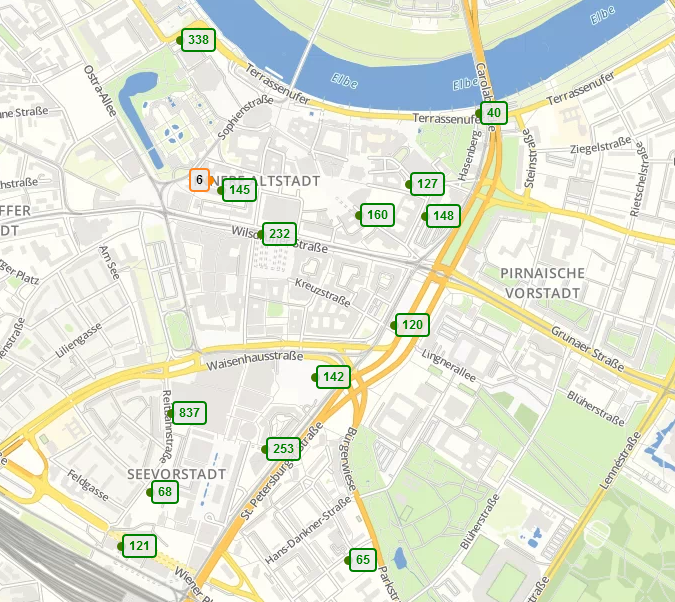
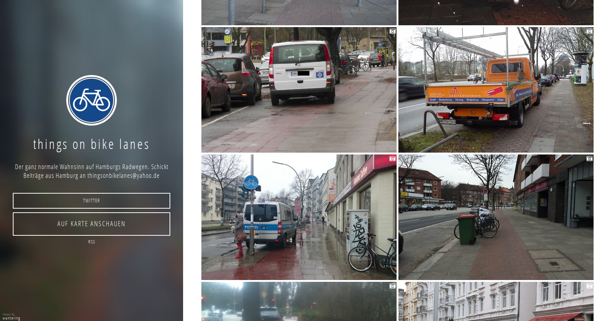
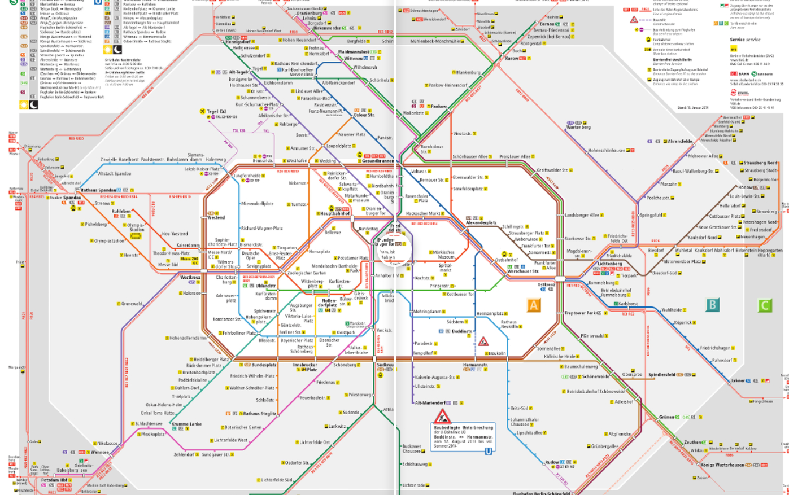
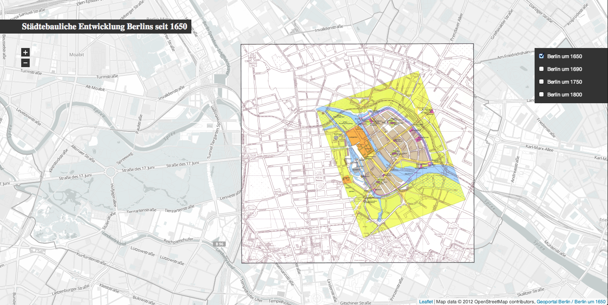
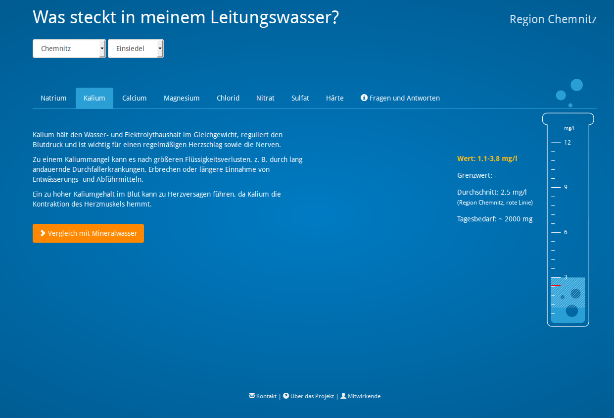

CODE A DIFFERENCE: Nutz' deine Fähigkeiten, um deine Stadt zu verbessern!
Gliederung
- Wer sind wir?
- Was ist Code for Germany?
- Das OK-Lab Chemnitz
- Projekte Chemnitz
- Projekte Deutschland
- Offene Daten in Chemnitz?!
- Die Zukunft
Wer sind wir?
Morris Jobke
Student, Lab Lead, Webentwickler (PHP, Python)
Open-{Source|Data|...}-Enthusiast
Tobias Gall
Student, Lab Lead
Interessiert an kuhlen Projekten
Ronny Hartenstein
....
...
Was ist Code for Germany?
Was ist Code for
Germany?
Ein Netzwerk von
Menschen, die sich praktisch mit
öffentlichen Daten und Civic Tech
beschäftigen.
Die Idee dahinter:
Gemeinsam
Open Data, Partizipation und staatliche
Transparenz vorantreiben und nützliche
digitale Werkzeuge für Bürger entwickeln.
Partner: Gestartet wird das Programm von der Open Knowledge Foundation Deutschland in Partnerschaft mit Code for America, Google und aktiven Teams in ganz DE.
Wie?
Lokale Gruppen in Städten: OK Labs (Open Knowledge Labs)
/ treffen sich regelmäßig um an Anwendungen und Visualisierungen für ihre Stadt zu arbeiten.
/ vernetzen sich deutschlandweit um gemeinsam an Projekten zu arbeiten.
/ stellen ihre Projekte bzw. deren Status auf einer gemeinsamen Plattform vor: codefor.de
/ bekommen Hilfe von Experten und Unterstützung bei der Öffentlichkeitsarbeit und bei der Arbeit mit der lokalen Verwaltung.
Ziele
/ Gemeinsam mehr Werkzeuge für Bürger entwickeln
/ Das Thema Open Data vorantreiben – Mehr Daten öffnen!
/ Mehr Sichtbarkeit für spannende lokale Projekte
/ Austausch auch auf internationaler Ebene
Das OK-Lab Chemnitz
Geschichte
/ 22. Februar 2014 - Open Data Day
/ März - Aufruf zur Gründung von Labs von OKFN
/ Dezember - Assembly auf dem 31C3 mit anderen Labs
/ Regelmäßige Treffen (jeden zweiten Donnerstag)
Unsere Ziele
/ Leute finden, die Lust haben mitzumachen
/ offene Daten sammeln
/ gemeinsam Projekte umsetzen
/ mehr Daten in Chemnitz öffnen
Projekte Chemnitz
Baustellenkarte
TODO
Daten abrufen und parsen
- Übersicht-Webseite abrufen
- URLs für Detailseiten finden
- Detailseiten abrufen
- Daten versuchen zu interpretieren (Datum, Lagebeziehungen)
- Daten als Schlüssel-Wert-Paare abspeichern
Daten abrufen und parsen (II)
seit 10.05.2013{
"since": "2013-05-10",
"until": null
}{
"since": "2013-05-10",
"until": "2013-06-15"
}Daten abrufen und parsen (III)
zwischen Lange Straße und Leipziger Straße{
"relation": "between",
"streets": ["Lange Straße", "Leipziger Straße"]
}{
"relation": "intersection",
"streets": ["Bornaer Straße", "Wittgensdorfer Straße"]
}Und nun?
{
"relation": "intersection",
"streets": ["Bornaer Straße", "Wittgensdorfer Straße"]
}{
"lat": 50.840775,
"lng": 12.906360
}OpenStreetMap

Schnittstellen finden
Maifeuer
Quelle: Sachsen Fernsehen
Trinkwasser

Spannend weil:
- grafisch hübsch aufbereitet
- Erklärungen zu Bestandteilen
- Vergleich mit Mineralwässern
- Erklärt Wasserhärte (unspannend)
- funktioniert auch auf Smartphone
Aber: es fehlen Daten :(
Datensätze je Hochbehälter wären klasse!
Visualisierung von Geodaten
Baustellen! cartodb.com/../baustellen
Städtische Leuchten in Rostock
Quelldaten: OpenData.HRO (CKAN v1.8)
Quelle: opendata-hro.de/dataset/leuchten
basiert auf CKAN: the world’s leading open-source data portal platform
opendata-chemnitz.de
basierend auf CKAN
abwarten ...
Coole Projekte in Deutschland
codefor.de/projekteBürger baut Stadt
Parkplätze Dresden
Things on Bikelines
Barrierefreiheit im ÖPNV
Historische Entwicklung Berlins
Redeployment
Offene Daten in Chemnitz?!
- es gibt veröffentliche Daten
- z.B. Amtsblätter
- verstreut über die Webseite
- schwierig zu finden
- ungünstige Formate (PDF)
- Lizenz?
- Korrektheit?
\o/
Wir wurden von einem Stadtrat nach unseren Wünschen gefragt
\o/
Tippfehler
Lage: zwischen Hübschmannstraße unf KanzlerstraßeStraße: Berbisdorfer Straße
Lage: zwischen Klaffenbacher Weg und LerchenstraßeKorrektheit
Straße: Annaberger Straße
Lage: Kreuzung Schulstraße

Radwege in Chemnitz (Chris Hübsch)
Quelle
Die Zukunft
- Kontakte zu anderen OK Labs (Leipzig, Dresden)
- Gemeinsame Treffen
- Gemeinsames Arbeiten
- Spaß an der Sache
und
Wir brauchen
strukturierte
aktuelle
lizensierte
Daten
Vielen Dank für ihre Aufmerksamkeit!
Kommt vorbei: Open Data Workshop zu den
Chemnitzer Linux Tagen
codeforchemnitz@lists.okfn.org
codeforchemnitz.de
Tooling
overpy
import overpy
api = overpy.Overpass()
# fetch all ways and nodes
result = api.query("""
way["name"="%s"] ["highway"];
(._;>;);
out body;
"""%('Rathausstraße'))
# print lat/lon for all nodes in all ways
for way in result.ways:
print("Name: %s" % way.tags.get("name", "n/a"))
for node in way.nodes:
print("Lat: %f, Lon: %f" % (node.lat, node.lon))Overpass-XML
Overpass-QML
area(3600062594)->.chemnitz;
(
way
["name"="%s"]
["highway"]
(area.chemnitz);
);
out body;
>;
out skel qt;